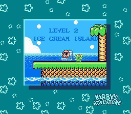

Kirby's Adventure Trivia
-Put together, the first letter of the first seven levels' names spells VIBGYOR which is ROYGBIV, a common acronym for the colors of the rainbow, spelled backwards.
-Furthermore, the border during each level's scene matches its' color (Ice Cream Island: indigo, Rainbow Resort: red, etc.).
-At approximately 6 megabits, Kirby's Adventure has the most memory of any NES cartridge.
